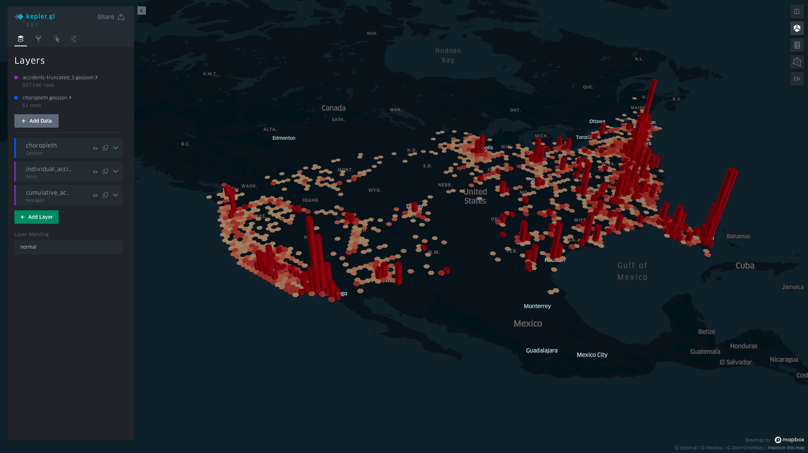
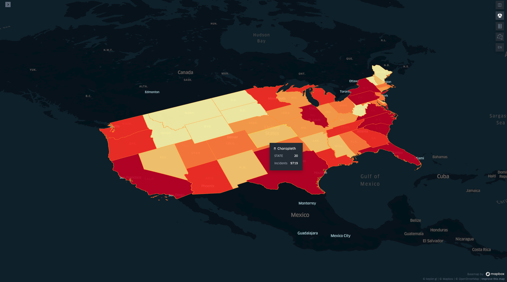
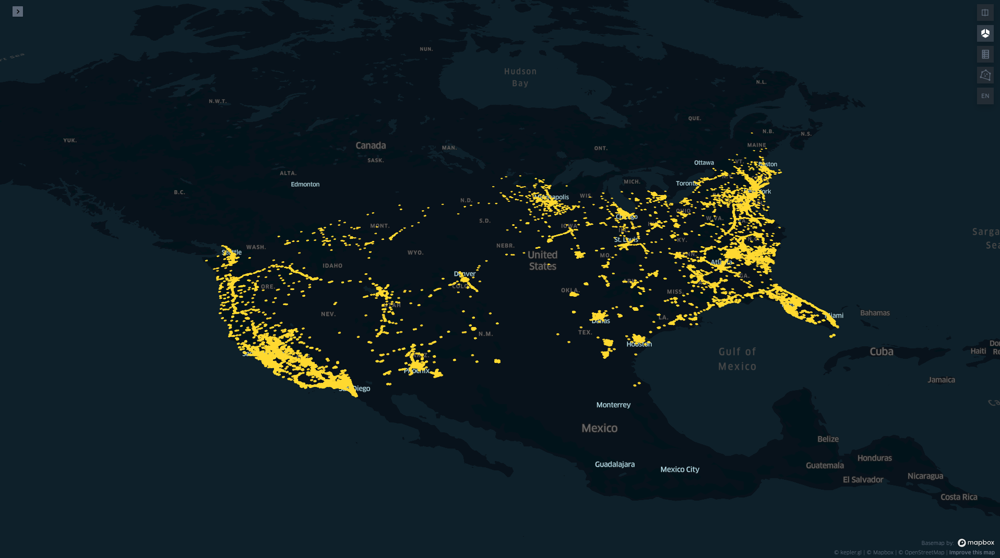

<!-- @format -->

<!DOCTYPE html>
<html></html>
<head>
  <meta charset="utf-8" />
  <meta http-equiv="X-UA-Compatible" content="IE=edge" />
  <title>Jit Corn</title>
  <meta name="description" content="" />
  <meta name="viewport" content="width=device-width, initial-scale=1" />
  <meta name="robots" content="all,follow" />
  <!-- Bootstrap CSS-->
  <link rel="stylesheet" href="vendor/bootstrap/css/bootstrap.min.css" />
  <!-- Font Awesome CSS-->
  <link rel="stylesheet" href="vendor/font-awesome/css/font-awesome.min.css" />
  <!-- Google fonts - Roboto-->
  <link
    rel="stylesheet"
    href="https://fonts.googleapis.com/css?family=Roboto:400,300,700,400italic"
  />
  <!-- owl carousel-->
  <link rel="stylesheet" href="vendor/owl.carousel/assets/owl.carousel.css" />
  <link
    rel="stylesheet"
    href="vendor/owl.carousel/assets/owl.theme.default.css"
  />
  <!-- theme stylesheet-->
  <link rel="stylesheet" href="css/style.default.css" id="theme-stylesheet" />
  <!-- Custom stylesheet - for your changes-->
  <link rel="stylesheet" href="css/custom.css" />
  <!-- Favicon-->
  <link rel="shortcut icon" href="img/favicon.png" />
  <!-- Tweaks for older IEs-->
  <!--[if lt IE 9]>
    <script src="https://oss.maxcdn.com/html5shiv/3.7.3/html5shiv.min.js"></script>
    <script src="https://oss.maxcdn.com/respond/1.4.2/respond.min.js"></script
  ><![endif]-->
</head>
<body>
  <div id="all">
    <div class="container-fluid">
      <div class="row row-offcanvas row-offcanvas-left">
        <!--   *** SIDEBAR ***-->
        <div id="sidebar" class="col-md-4 col-lg-3 sidebar-offcanvas">
          <div class="sidebar-content">
            <h1 class="sidebar-heading"><a href="index.html">Jit Corn</a></h1>
            <p class="sidebar-p">
              Hi, I am an ex-Finance professional turned Software Engineer.
            </p>
            <p class="sidebar-p">Check out some of my work here!</p>

            <ul class="sidebar-menu">
              <!-- Link-->
              <li class="sidebar-item">
                <a href="index.html" class="sidebar-link active">Home</a>
              </li>
              <!-- Link-->
              <li class="sidebar-item">
                <a href="about.html" class="sidebar-link">About</a>
              </li>
              <!-- Link-->
              <li class="sidebar-item">
                <a href="contact.html" class="sidebar-link">Get in touch</a>
              </li>
            </ul>
            <p class="social">
              <a href="https://github.com/jcleow" title="" class="github"
                ><i class="fa fa-github"></i
              ></a>
              <a
                href="https://www.linkedin.com/in/leow-jit-corn-2b7a44a8/"
                title=""
                class="linkedin"
                ><i class="fa fa-linkedin"></i
              ></a>
              <a href="mailto:jc.leow94@gmail.com" title="" class="email"
                ><i class="fa fa-envelope"></i
              ></a>
            </p>
            <div class="copyright text-center text-md-left">
              <!-- <p class="credit">
                &copy;2018 Your name or company | Template by
                <a
                  href="http://bootstrapious.com/portfolio-themes"
                  class="external"
                  >Bootstrapious.com</a
                >
              </p> -->
              <!-- Please do not remove the backlink to us, unless you support the development at http://bootstrapious.com/donate. It is part of the license conditions. Thanks for understanding :)        -->
            </div>
          </div>
        </div>
        <!--   *** SIDEBAR END ***  -->
        <!--   *** DETAIL ***-->
        <div class="col-md-8 col-lg-9 content-column white-background">
          <div class="small-navbar d-flex d-md-none">
            <button
              type="button"
              data-toggle="offcanvas"
              class="btn btn-outline-primary"
            >
              <i class="fa fa-align-left mr-2"></i>Menu
            </button>
            <h1 class="small-navbar-heading">
              <a href="index.html">Jit Corn </a>
            </h1>
          </div>
          <div class="row">
            <div class="col-xl-10">
              <div class="content-column-content">
                <div class="d-flex justify-content-between">
                  
                <h1> 
                  <!-- <span title='Project Demo'>
                  <a href="https://www.groupbuy.site/"
                    >Group Buy App
                    <sup
                      ><i
                        style="font-size: 1.5rem"
                        class="fa fa-external-link"
                      ></i></sup
                  ></a> -->
                  <a>US Accidents Visualization</a>
                  </span>
                </h1>
                <div class='d-flex'>
                  <div class='text-center mr-3'>
                  <a
                    href=https://cutt.ly/zclp1lH
                    title=""
                    class="github mr-3"
                  >
                    <span title="US Accidents Jupyter Notebook"
                      ><i class="fa fa-sticky-note project-github-link text-center"></i></span
                  ></a>
                  <div class='repo-label text-center'>Jupyter Notebook</div>  
                  </div>
                  <div class='text-center'>
                  <a
                    href=https://www.dropbox.com/s/pqipkn5eu9fu02q/us-accidents-visualization-updated.html?dl=0
                    title=""
                    class="github mr-3"
                  >
                    <span title="US Accidents Visualization Dropbox Link"
                      ><i class="fa fa-dropbox project-github-link"></i></span
                  ></a>
                  <div class='repo-label text-center'>Dropbox Link</div>  
                  </div>
                  <div class='text-center'>
                  <a
                    href=https://github.com/jcleow/us-accidents-visualization
                    title=""
                    class="github mr-3"
                  >
                    <span title="US Accidents Visualization Github Repo"
                      ><i class="fa fa-github project-github-link"></i></span
                  ></a>
                  <div class='repo-label text-center ml-3'>Github Repo</div>  
                  </div>
                  </div>
                </div>
                <p class="lead">
                  A geospatial data visualization project on Traffic Accidents across the US.
                </p>
                <div id="main-slider" class="owl-carousel owl-theme">
                  <div class="youtube-embed d-flex justify-content-center">
                    <iframe
                      width="853"
                      height="480"
                      src="https://youtube.com/embed/FgtUSzg9QV4"
                      frameborder="0"
                      allow="accelerometer; autoplay; clipboard-write; encrypted-media; gyroscope; picture-in-picture"
                      allowfullscreen
                    ></iframe>
                  </div>
                  <div class="youtube-embed d-flex justify-content-center">
                    <iframe
                      width="853"
                      height="480"
                      src="https://www.youtube.com/embed/2ltCnh19l74"
                      frameborder="0"
                      allow="accelerometer; autoplay; clipboard-write; encrypted-media; gyroscope; picture-in-picture"
                      allowfullscreen
                    ></iframe>
                  </div>
                  <div class="youtube-embed d-flex justify-content-center">
                    <iframe
                      width="853"
                      height="480"
                      src="https://youtube.com/embed/a82alIhPCNc"
                      frameborder="0"
                      allow="accelerometer; autoplay; clipboard-write; encrypted-media; gyroscope; picture-in-picture"
                      allowfullscreen
                    ></iframe>
                  </div>
                  <div class="item">
                    
                  </div>
                  <div class="item">
                    
                  </div>
                  <div class="item">
                    
                  </div>
                </div>
                <!-- /#main-slider-->
                <h3>Features of the App</h3>
                <p>
                  1. Users can choose amongst different display presets of the US Accidents Geospatial Data Sets using different layers, in 2D, 3D or 4D (see Hexbins).                
                  
                </p>
                <p>
                  2. Choropleth (i.e a coloured heat map) layer allows users to get a quick overview of the cumulative accidents that have occurred across states from 2016 to 2020.
                  They appear to be directly correlated to the more populous regions in US.
                </p>
                <p>
                  3. Individual Layer allows for accurate depiction of where accidents occured. They can be found located  nicely on roads. Smaller roads are not displayed because of a lower resolution map used.
                  campaigns/listings.
                </p>
                <p>
                  4. Hexbins give users a 4D representation of the dataset, where the cumulative accidents are clustered in an area demarcated by the relevant geometric co-ordinates. Height corresponds to the cumulative accidents in the same area.
                </p>
                <p>
                  5. Usage of Kepler GL's Time Playback to view how the individual accidents and hexbins layer change over time.
                </p>
                <h3>Technical Learnings</h3>
                <ul>
                  <li>
                   First attempt at using pandas/Geopands and I have learnt alot about data manipulation and cleaning using GeoPandas in Jupyter Notebook.
                  </li>
                  <li>Utilized Google Cloud Platform's AI Notebook for more performant loading times</li>
                  <li>
                    Understood more indepth about the quirks of Geospatial Data such as Co-ordinate Reference Systems (CRS) and Geographic Information System (GIS).
                  </li>
                  <li>
                    Learnt more about IPython's magic functions and the importance of saving intermediate file results to files such that information is backed up through out multiple steps of the data ETL process.
                  </li>
                  <li>
                    Deep dived into Geopandas and Geoplot's dependent libraries when fixing bugs(i.e shapely is a dependency of geopandas). For more detailed write up, refer to Jupyter Notebook in link above.
                  </li>
                </ul>
                <h3>Reflections</h3>
                <ul>
                  <li>
                    While the framework on this project was similiar to tutorials online, finding a legitimate geospatial data (i.e including longitude and latitude data) was immensely difficult. 
                    Good geospatial data is hard to come by.
                  </li>
                  <li>
                    The usage of magic functions saved tremendous amounts of time, when intermediate results could be saved into the kernels for later usage. Because I was inexperienced at first, I had to keep re-running the code and that wasted alot of time.
                  </li>
                  <li>
                    Most of the code was performed in Kepler GL's Python implementation, which is less mature compared to its Javascript implementation. However, this still gave me a good grasp in performing the necessary ETL operations on the raw US Accidents dataset before loading onto KeplerGL.
                  </li>
                  <li>
                    Kepler GL is highly memory intensive, and it is highly recommended to only feed it the necessary columns.
                  </li>
                  <li>
                    Troubles with Deployment: I also tried to deploy onto Heroku but it keeps exceeding the free dyno's memory limit using a Flask implementation. Since we can simply view it from an embedded HTML file, the intermediate measure is to save it onto Dropbox for public to view.
                    I will explore using the Dropbox OAuth method in the JS implementation in the future.
                  </li>
                </ul>


                <h3>Technologies Used</h3>
                <ul>
                  <li> Data Manipulation & ETL: Python, GeoPandas</li>
                  <li>2D Visualization: GeoPlot</li>
                  <li>3D and 4D Visualization: Kepler.GL</li>                  
                  <li>Misc: Google Cloud Platform: AI Notebook, Jupyter Notebook</li>                              
                </ul>
              </div>
            </div>
          </div>
        </div>
      </div>
    </div>
  </div>
  <!-- JavaScript files-->
  <script src="vendor/jquery/jquery.min.js"></script>
  <script src="vendor/popper.js/umd/popper.min.js"></script>
  <script src="vendor/bootstrap/js/bootstrap.min.js"></script>
  <script src="vendor/jquery.cookie/jquery.cookie.js"></script>
  <script src="vendor/owl.carousel/owl.carousel.min.js"></script>
  <script src="vendor/masonry-layout/masonry.pkgd.min.js"></script>
  <script src="js/front.js"></script>
</body>
